Portfolio View Setup
Tip: Use the top-left Change version dropdown to select the version you’re running.
Purpose
The purpose of the Portfolio View is to provide a holistic view of cryptographic vulnerabilities across the enterprise’s applications. Although the VS Code extension and index.html from the CLI have visualizations including a pie chart and dashboard, the Portfolio View allows for categorizing scanned code into applications, repositories, and business units. This helps with awareness and action on any risk and compliance issues discovered by the scans.
Overview
This page provides step-by-step instructions for downloading, installing, setting up, and using the Portfolio View.
It covers:
- Prerequisites
- Which files to download
- Portfolio View files
- Additional downloads
- Database setup
- Installation procedure
- Loading data
- Using the Portfolio View dashboard
- Troubleshooting
Prerequisites
| Components | Requirements |
|---|---|
| Operating system | • Windows Server 2022 Standard • Red Hat Enterprises Linux (RHEL) 9 |
| System memory and CPU | • 64 GB RAM • 16 vCPU |
| Software | • Node.js v16 • PostgreSQL 16.0 or higher • IBM Cognos Analytics 12.0.4 |
Downloads
Portfolio View files
You will need to download the QSE Portfolio View and three IBM Cognos Analytics eAssemblies. The Client is multiplatform, while the Server and Installer are platform-specific. Depending on your operating system:
- IBM Cognos Analytics Server 12.0.4 Linux x86 Multilingual
- IBM Cognos Analytics Installer 3.7.35 Linux x86 Multilingual
- IBM Quantum Safe Explorer 2.2.3 Portfolio View - Multiplatform English
- IBM Cognos Analytics Client 12.0.4 Multiplatform Multilingual
- IBM Cognos Analytics Server 12.0.4 Microsoft Windows Multilingual
- IBM Cognos Analytics Installer 3.7.35 Microsoft Windows Multilingual
- IBM Quantum Safe Explorer 2.2.3 Portfolio View - Multiplatform English
- IBM Cognos Analytics Client 12.0.4 Multiplatform Multilingual
If necessary, send the packages to your server:
scp -P PORT -i ssh_key.pem QSE_PortfolioView_Platform.zip <user>@<server_ip_address>:/path/to/download.zipAdditional Downloads
NodeJS
Download the latest version of NodeJS for your operating system and architecture/distribution.
Java
You need to install the Java Runtime Environment (JRE) separately. To see which version is compatible with your version of Cognos:
- Navigate to Cognos Analytics Supported Software Environments.
- Select your version.
- Open the Prerequisite Software page.
For 12.0.4, the requirement is Oracle Java SDK/JRE/JDK 8.0.40 and future fix packs.
A valid install command for this version is:
sudo dnf install java-1.8.0-openjdk-develTest the install:
java -version
openjdk version "1.8.0_482"
OpenJDK Runtime Environment (build 1.8.0_482-b08)
OpenJDK 64-Bit Server VM (build 25.482-b08, mixed mode)If the above doesn’t work, add it to the path:
# Double-check the installation location, here you should see java-1.8.0-openjdk-devel
ls /usr/lib/jvm
# Create a script to export the path:
sudo vim /etc/profile.d/java.sh
# Add the following:
export JAVA_HOME=/usr/lib/jvm/java-1.8.0-openjdk
export PATH=$PATH:$JAVA_HOME/bin
# Make it executable
sudo chmod +x /etc/profile.d/java.sh
# Reload the profile:
source /etc/profile.d/java.shCheck the installation:
echo $JAVA_HOME
java -versionYou can skip this step and use the Java Runtime Environment (JRE) provided with Cognos Analytics.
Database
PostgreSQL
Download the latest version of PostgreSQL for your architecture.
Follow the instructions to initialize the database, make sure to name it qsapm.
Windows Path Configuration
On Windows, the PostgreSQL binaries directory is not automatically added to the Path environment variable. To add it, find the binaries directory, which will look like this:
C:\Program Files\PostgreSQL\<version>\binOpen the System Properties settings:
sysdm.cpl- Click the Advanced tab and then the Environment Variables button.
- Under System variables, select the Path variable and click the Edit button.
- An Edit environment variable dialog box containing a list of paths will appear. Click the New button and paste the PostgreSQL binaries path found earlier into the new entry.
- Click OK on all three open dialog boxes.
Ensure that PostgreSQL runs as a dedicated system user with limited privileges.
Secure the PostgreSQL data directory by setting the correct file permissions, preventing unauthorized access. For example:
chown -R postgres:postgres /var/lib/postgresql
Installation & Setup
Database setup
Set a password for PostgreSQL
If you haven’t already set a password for the database user postgres, follow these steps:
First, connect to the database:
sudo -u postgres psqlSet a password:
\password postgres # Enter your passwordCreate a database
If you haven’t yet created a database named qsapm, do so now:
psql -U postgres # initialize psql shell, if you aren't in it alreadyCREATE DATABASE qsapm;
\q -- exit the psql shellRun setup scripts
Unzip all the zipped files in the IBM_Quantum_Safe_Explorer_Portfolio_View_
psql -h localhost -U postgres -d qsapm -f postgresdbdump.sql
psql -h localhost -U postgres -d qsapm -f CHANGELOG.sqlIf you encounter a syntax error with the first script, see this fix.
For reference, the syntax is as follows:
psql -h <host> -U <username> -d <dbname> -f script_path.sqlApplication portfolio data loader setup
cd apm-appdetailsdataloader
npm installExplorer scan data loader setup
cd ../apm-dataloader
npm installCognos
- Connect to your Linux VM using an SSH client that supports X11 forwarding:
- If connecting from MacOS, you can use XQuartz (or choose your own).
brew install --cask xquartz # install xquartz on MacOS- If connecting from Windows, you can use PuTTY (or choose your own).
- Follow these commands to configure X11 forwarding and launch the installer:
# Connect to the VM (optionally with X11 forwarding enabled)
ssh -X -i ~/.ssh/ssh_key.pem <user>@<server_ip_address> -p PORT
# Install prerequisite libraries
sudo dnf groupinstall "Server with GUI" # double-check group name by running dnf group list
sudo dnf update -y
sudo dnf install libXtst libX11.so.6 libnsl nspr.i686 nspr.x86_64 nss.i686 nss.x86_64 motif.i686 motif.x86_64 libnsl.so.1 libstdc++.so.6
# Enable graphical mode, if it isn't already set
systemctl set-default graphical
# Enable X11Forwarding
sudo vim /etc/ssh/sshd_config
# Edit/add in the following: (find the relevant section around line 108, which should already have these variables)
X11Forwarding yes
X11UseLocalhost yes
X11DisplayOffset 10
# Restart the sshd service
sudo systemctl restart sshd
# Set ulimit values
sudo ulimit -t unlimited -d unlimited -f unlimited -m unlimited -u unlimited -n 8192 -s 8192 -v unlimited
# Reboot
reboot
# FOR MAC - RUN ON YOUR TERMINAL (NOT ON THE SERVER): Enable mouse click-through so you can click through the GUI installer
vim ~/.ssh/config
# Edit/add in the following: (find the relevant section around line 108, which should already have these variables)
Host *
ForwardX11 yes
ForwardX11Trusted yes
ForwardAgent yes
# Reconnect to the VM with the above X11 forwarding enabled client
ssh -X -i ~/.ssh/ssh_key.pem <user>@<server_ip_address> -p PORT
# Check your xauth cookie; if empty, reconnect to the VM and try again
xauth list $DISPLAY # Example output: itz-1wtxx7-helper-1/unix:10 MIT-MAGIC-COOKIE-1 3843ddbf3946c81417739f83dd2944
# Run as root
sudo su
# Create the .Xauthority file
touch ~/.Xauthority
# Add the cookie to the root user
xauth add <entire_cookie_output_from_above>
# Navigate to the installer directory and launch it
chmod +x ca_instl_lnx86_3.7.35.bin
./ca_instl_lnx86_3.7.35.bin- Select your desired language and click Next.
- Select IBM Cognos Analytics - <version> and click Next.
- Select I accept the terms of the License Agreement and click Next.
- Set to your desired install location and click Next.
- (If the directory does not already exist) Allow the installer to create the install directory by clicking Yes.
- On the Component Selection, select accept the default selections and click Next.
- Click Install.
- Click Done.
- Double-click the installer ca_instl_win_3.7.35.exe.
- Select IBM Cognos Analytics - 12.0.4 and click Next.
- Select I accept the terms of the License Agreement and click Next.
- Set to your desired install location and shortcut options and click Next.
- (If the directory does not already exist) Allow the installer to create the install directory by clicking Yes.
- On the Component Selection, select Easy Install and click Next.
- Fill in the Cognos administrator user ID and password, note them down, and click Next.
- Note: the password must include:
- 1 uppercase character
- 1 lowercase character
- 1 digit
- 1 special character among [!@#$]
- be of a length between [15, 20] characters
- Review the details, making sure you have enough space on the disk and click Install.
- Wait for the installation to complete.
- Click Done.
Download and add JDBC Driver
- Identify the appropriate JDBC driver from the IBM Cognos Analytics JDBC Drivers page.
- Download it from the appropriate downloads page based on your database.
- For PostgreSQL, use their JDBC Downloads.
- Move it into the
installation_location\driversdirectory.
- For example:
C:\Program Files\ibm\cognos\analytics\drivers
Increase max memory for WebSphere Liberty Profile
- Launch the Cognos Configuration:
# Naviage to installation directory/bin64
cd /opt/ibm/cognos/analytics/bin64 # or replace with your custom install directory
# Become superuser (you may need to copy over the xauth cookie again)
sudo su
# Run the installer
./cogconfig.sh- Under Local Configuration → Environment → IBM Cognos services, click on IBM Cognos.
- Set the Maximum memory for Websphere Liberty Profile in MB to 16384.
- Click File → Save or press Ctrl+S.
- When the processing window completes, click Close.
- Under Local Configuration → Data Access → Content Manager, right-click on Content Store.
- Select Delete and click Yes on the confirmation window.
- Under Local Configuration → Data Access, right-click on Content Manager.
- Select New Resource → Database….
- Enter qsapm as the Name and select PostgreSQL as the type (you may need to scroll down to find it).
- Fill out the details, including the database server, port, username, and password. For the database name, enter qsapm, and for the schema, enter qspm.
- Right-click on the newly created qsapm database and click Test. Adjust the details as needed if this connection fails.
- Under File, click Save.
- Under File, click Exit.
- If there is an additional window asking to start the service, click Yes.
- Upon completion, click Close.
- Launch the Cognos Configuration:
- From the Start menu, search for IBM Cognos Configuration and press Enter.
- Under Local Configuration → Environment → IBM Cognos services, click on IBM Cognos.
- Set the Maximum memory for Websphere Liberty Profile in MB to 16384.
- Click File → Save or press Ctrl+S.
- When the processing window completes, click Close.
- Click File → Exit or press Alt+F4.
- In the restart confirmation window, click Yes.
- After the restart completes, click Close.
Import custom dashboard
- Unzip the
IBM Quantum Safe Explorer 2.2.3 Portfolio View - Multiplatform Englishand all folders within up to cognosdashboard. - Copy the
Team Content.zipfolder within the cognosdashboard directory toinstall_location/analytics/deployment/. - Navigate to IBM Cognos Analytics in your browser and login with the cognos administrator user ID and password you created.
- You can also search for IBM Cognos Analytics from the Start/Search menu.
The dashboard can be accessed at http://<server>:<port>/bi. The default is http://localhost:9300/bi when running locally.
- From the hamburger menu on the top-left, navigate to Manage -> Administration console…
- Navigate to the Configuration tab, select Content Administration and click on the New Import icon:
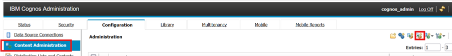
- Select Team Content and click Next twice:
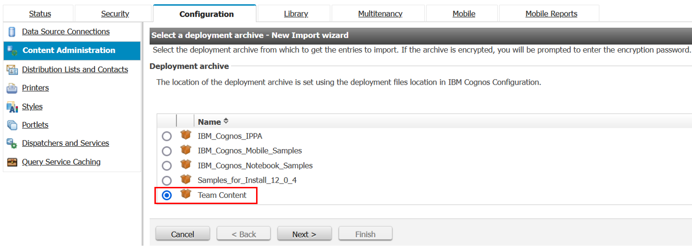
- The Public folders, directory, and library content section appears. Ensure that the checkbox for Portfolio View is selected, and then click Next thrice:
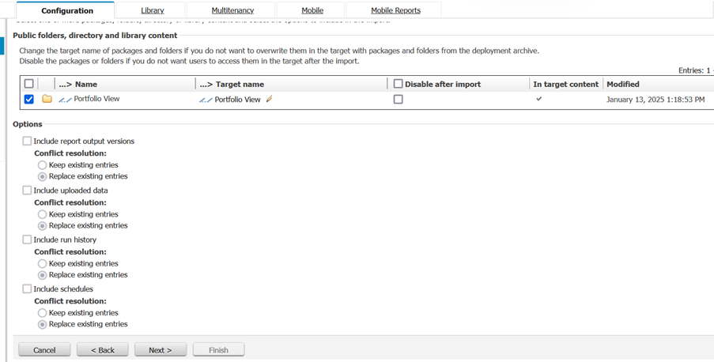
- Select an action and click Finish:
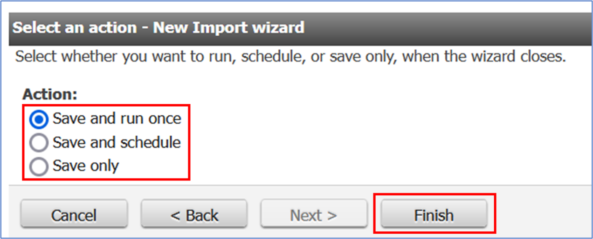
If unsure of the action to be selected, select Save and run once.
- Leave the default options to run the import now and click Run and then Ok to confirm:
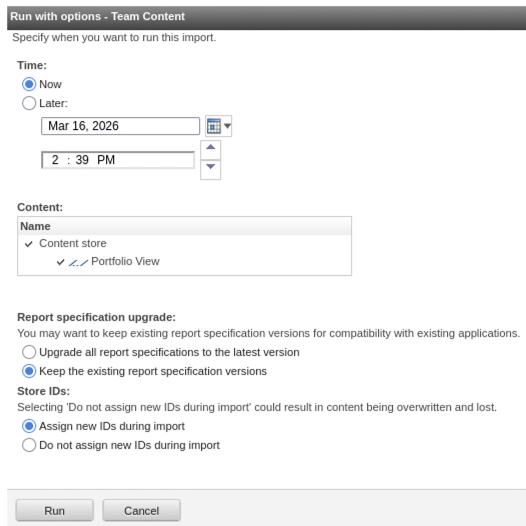
The imported folder will now be available in the Team Content tab under the Content page of the dashboard.
- Connect to the PostgreSQL instance:
- In the left panel, click Data Source Connections:
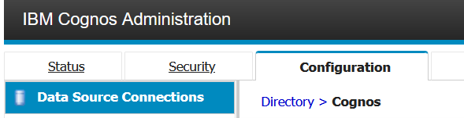
- Click the New Data Source icon near the top right of the Configuration page:
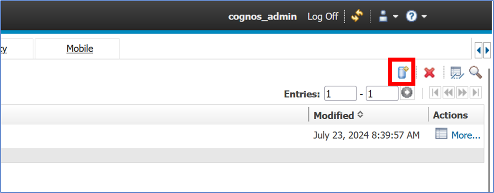
- Type the Name of the data source and click Next:
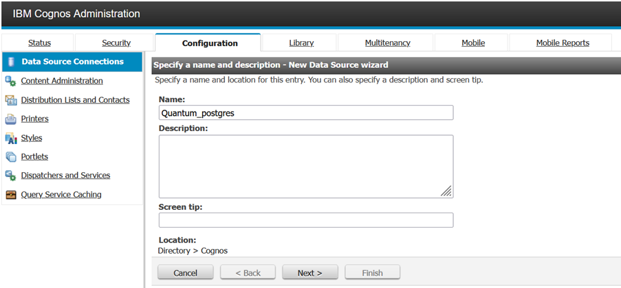
- Select JDBC as the data source type, and click Next:
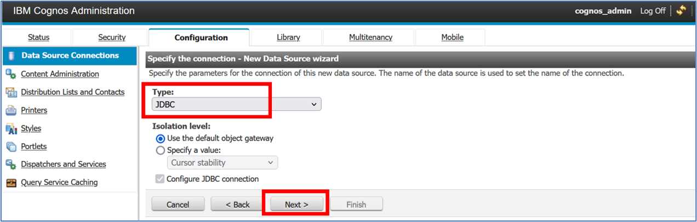
- On the following screen, select PostgreSQL as the datasource Type. Under JDBC URL, replace
<host>,<port>, and<database-name>with the details of the database:
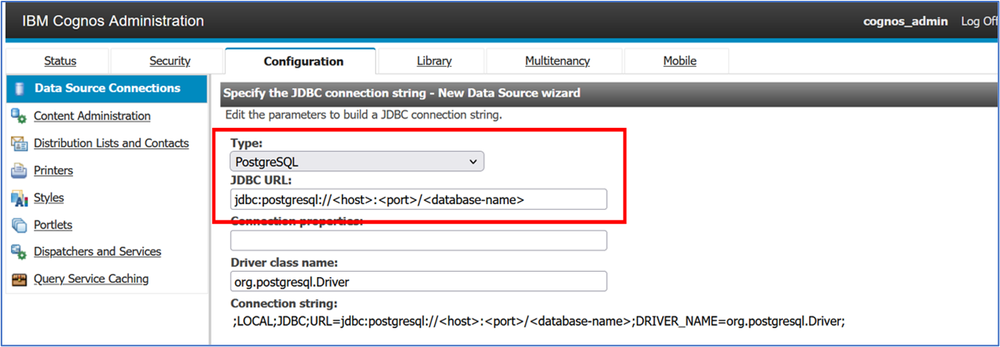
- Below, enter the credentials of the PostgreSQL database in the User ID and Password fields. Type the password again in the Confirm password field.
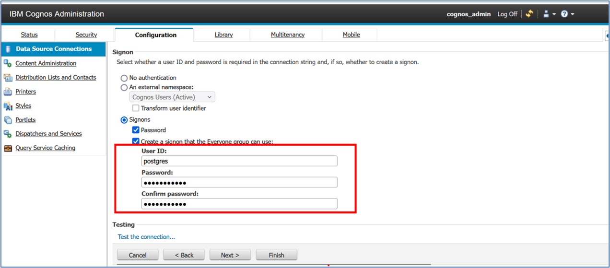
- Open the database connection test by clicking Test the connection…:
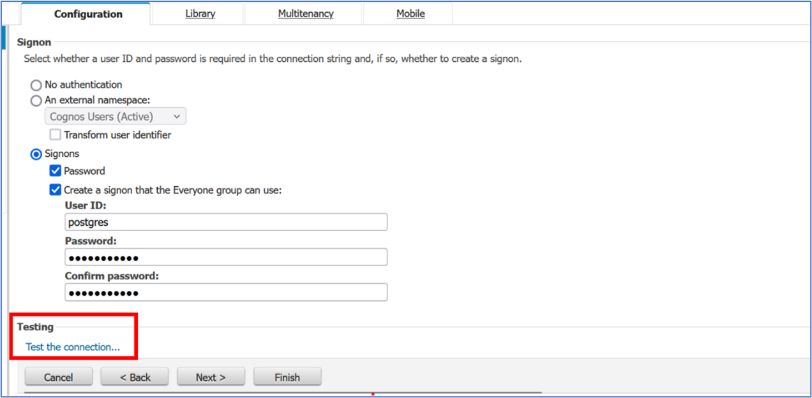
- Click Test button to test the connection:
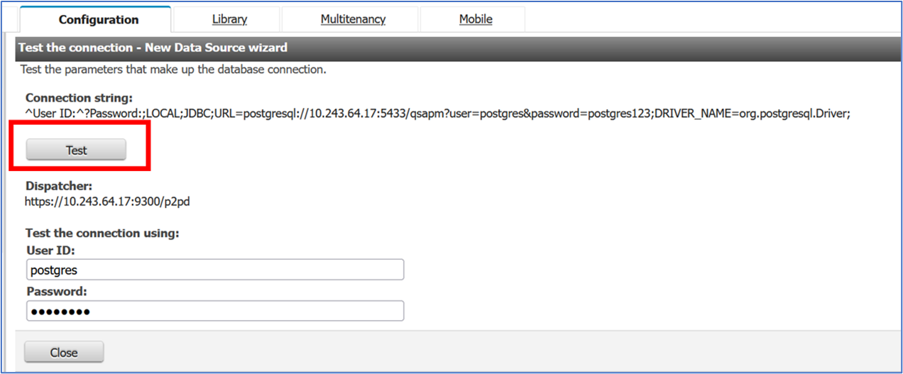
- In the test results, ensure that the status is Succeeded and click Close twice.
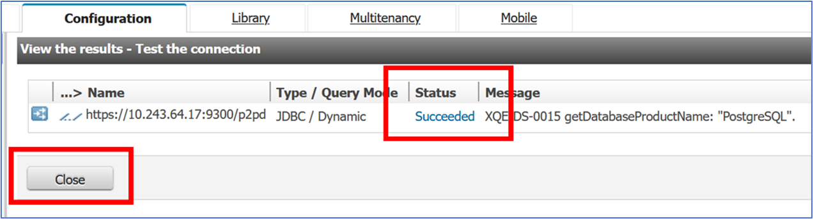
If the connection test fails, check host, port, database name, and credentials and try again.
You can try connecting from your terminal first to confirm the details:
psql "host=<host> port=<port> dbname=<dbname> user=<username> password=<password>" - Click Finish:
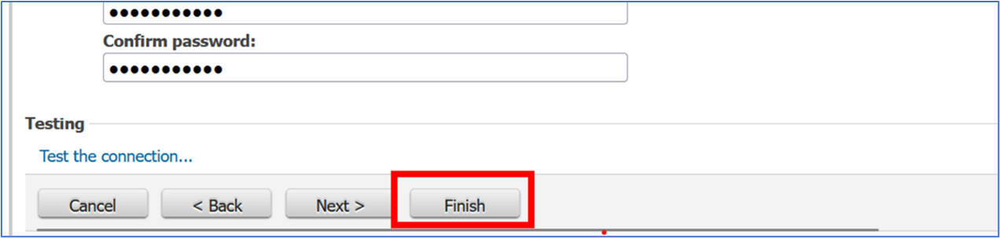
The data source is now displayed in the configuration page:
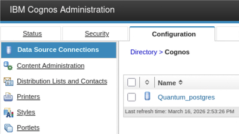
Update Cognos VM IP Address (optional)
Follow the steps below to update the IP address of the Virtual Machine in which Cognos is installed:
Login to Cognos using admin access.
Click on the Team content tab, followed by the Team content folder, and then navigate to the New Dashboard and click the Share option to copy the link.
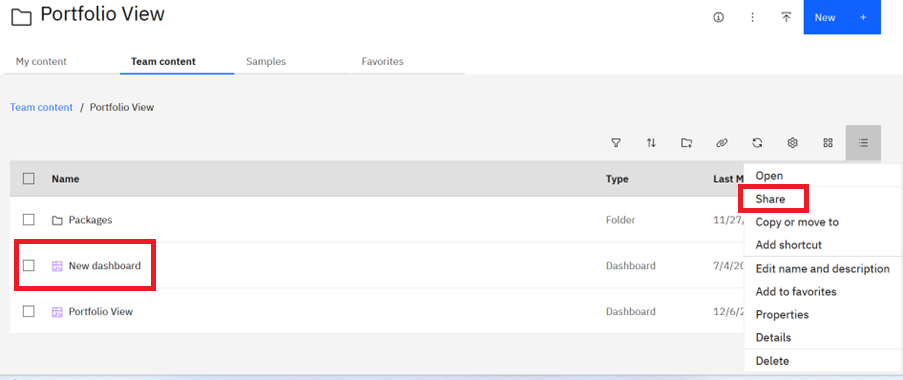
- Open the Portfolio View dashboard and scroll down to select the Click to design dashboard text field. In the properties pane, paste the new link in the Link to field and save the report.
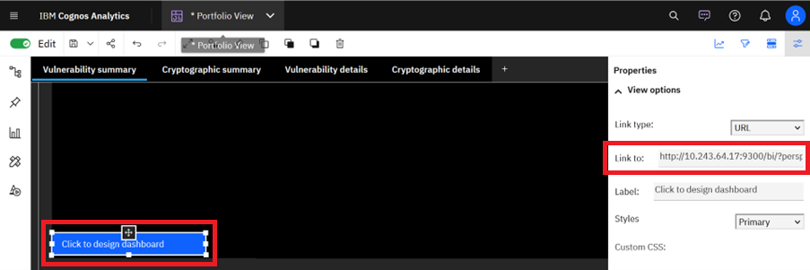
Load data into database
Loading application portfolio data
- Open the following configuration file in a text editor:
apm-appdetailsdataloader/dist/config.json- Edit the csv path to match yours, and edit the
dbConfigsection using the details of the PostgreSQL server:
{
"dbConfig": {
"user": "",
"database": "qsapm",
"port": ,
"host": "",
"password": "",
"schema": "qspm"
},
"csvFilePath": ""
}- Copy the application portfolio file to the following directory:
apm-appdetailsdataloader/inputSee the examples below to understand the fields required:
Reveal application portfolio template csv
app_portfolio_sample.csv
organizationid,organizationname,organizationdescription,organizationlocation,businessunitid,businessunitname,businessunitdescription,divisionid,divisionname,divisiondescription,applicationid,applicationname,applicationdescription,applicationsize,applicationstatus,applicationstartdate,applicationenddate,applicationowner,repositoryid,repositoryname,repositorylanguage,repositorysize,repositorydependencies,repositorystatus,repositorystartdate,repositoryenddate
1,Northwind Corp,Global supply chain leader,Chicago,BU100,Logistics,Handles logistics operations,DIV100,Freight Ops,Freight operations division,APP100,Freight Manager,Manages freight scheduling,250,Active,2023-01-15,,Alice Johnson,REPO100,Freight-API,Java,1200,"spring,hibernate",Active,2023-01-20,
1,Northwind Corp,Global supply chain leader,Chicago,BU100,Logistics,Handles logistics operations,DIV100,Freight Ops,Freight operations division,APP100,Freight Manager,Manages freight scheduling,250,Active,2023-01-15,,Alice Johnson,REPO101,Freight-UI,JavaScript,800,"react,axios",Active,2023-02-01,
1,Northwind Corp,Global supply chain leader,Chicago,BU101,Warehousing,Warehouse operations,DIV101,Storage Ops,Storage and inventory division,APP101,Inventory Control,Tracks inventory levels,180,Active,2022-11-01,2024-12-31,Bob Smith,REPO102,Inventory-Service,Python,600,"flask,sqlalchemy",Inactive,2022-11-05,2024-12-31
2,BlueSky Tech,Cloud software provider,Austin,BU200,Engineering,Product engineering division,DIV200,Platform Services,Core platform services,APP200,Cloud Portal,Customer cloud portal,300,Active,2024-03-01,,Carol White,REPO200,Portal-Backend,Go,1500,"gin,gorm",Active,2024-03-05,
2,BlueSky Tech,Cloud software provider,Austin,BU200,Engineering,Product engineering division,DIV200,Platform Services,Core platform services,APP200,Cloud Portal,Customer cloud portal,300,Active,2024-03-01,,Carol White,REPO201,Portal-Frontend,TypeScript,900,"vue,axios",Active,2024-03-10,
2,BlueSky Tech,Cloud software provider,Austin,BU201,Security,Security and compliance,DIV201,Identity Services,Identity and access management,APP201,Identity Manager,Manages authentication,220,Active,2023-06-15,,David Lee,REPO202,Identity-Auth,Java,1100,"spring-security,jwt",Active,2023-06-20,
2,BlueSky Tech,Cloud software provider,Austin,BU201,Security,Security and compliance,DIV201,Identity Services,Identity and access management,APP201,Identity Manager,Manages authentication,220,Active,2023-06-15,,David Lee,REPO203,Identity-UI,JavaScript,700,"react,redux",Active,2023-07-01,
Reveal application portfolio sample csv
app_portfolio_template.csv
organizationid,organizationname,organizationdescription,organizationlocation,businessunitid,businessunitname,businessunitdescription,divisionid,divisionname,divisiondescription,applicationid,applicationname,applicationdescription,applicationsize,applicationstatus,applicationstartdate,applicationenddate,applicationowner,repositoryid,repositoryname,repositorylanguage,repositorysize,repositorydependencies,repositorystatus,repositorystartdate,repositoryenddate- Run the appropriate data loader to import the application portfolio data into the PostgreSQL database:
cd apm-appdetailsdataloader
npm run start
> csv-to-postgresql@1.0.0 start
> node dist/index.js
CSV file successfully parsed
Successfully inserted application related details into databaseLoading the Explorer scan output into the database
- Ensure the repo and app names from the application portfolio csv match the
RepositoryIdandApplicationIdin the JSON files you are loading.- You may need to add in the
RepositoryIdfield into yourquantum_safe_api_discovery_crypto_inventory.jsonfile.
- You may need to add in the
- Create the following folders under
apm-dataloaderif they don’t exist already:flatinputflatoutputflaterror
- Open the following configuration file in a text editor:
apm-dataloader/dist/config.json- Edit the folder paths to match yours, and edit the
dbConfigsection using the details of the PostgreSQL server:
{
{
"inputFolderPath": "/.../apm-dataloader/input",
"outputFolderPath": "/../apm-dataloader/output",
"errorFolderPath": "/../apm-dataloader/error",
"flatinputFolderPath": "/../apm-dataloader/flatinput",
"flatoutputFolderPath": "/../apm-dataloader/flatoutput",
"flaterrorFolderPath": "/../apm-dataloader/flaterror",
"dbConfig": {
"user": "",
"database": "qsapm",
"port": ,
"host": "",
"password": "",
"schema": "qspm"
}
}
}- Copy the following output files from the IBM Quantum Safe Explorer scans to the following directories:
quantum_safe_api_discovery_crypto_inventory.json -> apm-dataloader/flat-inputquantum_safe_cryptography_analysis_findings_java.json -> apm-dataloader/input- Run the appropriate data loader to import the Explorer scan outputs into the PostgreSQL database:
cd apm-dataloader
npm run start
> typescript-postgres-project@2.2.3 start
> node dist/main.js
Start Processing of file: quantum_safe_cryptography_analysis_findings_java.json
Start Processing of flat inventory file: quantum_safe_api_discovery_crypto_inventory.json
Processing JSON Data: {
...
}
Processing JSON Data: {
...
}
Data insertion successful of file: quantum_safe_cryptography_analysis_findings_java.json
Data insertion successful of flat inventory file: quantum_safe_api_discovery_crypto_inventory.jsonRun Cognos Dashboard
Accessing the dashboard
To view the Portfolio View dashboard:
- Use any web browser to navigate to
http://<server>:<port>/biand log in to Cognos:
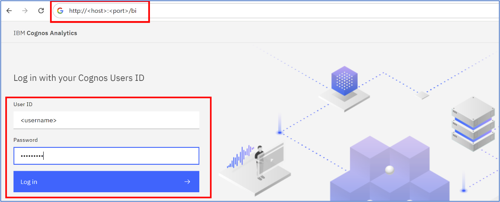
- Click the menu (hamburger) icon in the upper left corner of the welcome screen:
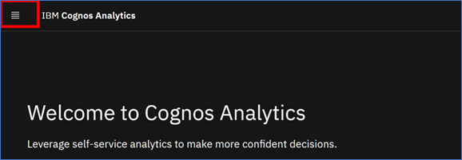
- Click Content:
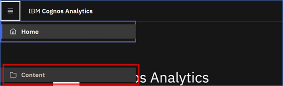
- Click the Team Content tab:
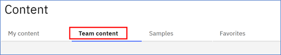
- Click the title on the Portfolio View tile:
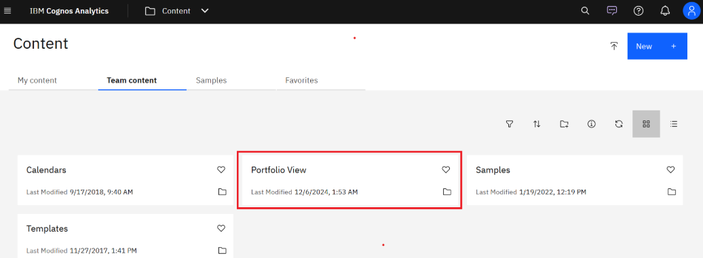
- The Portfolio View content appears:
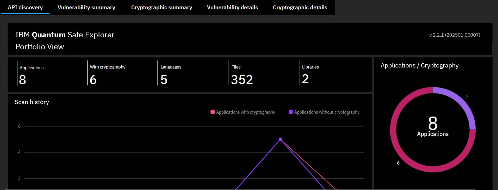
This dashboard displays the cryptographic vulnerability data across your application portfolio.
Use & Interpretation
Interpreting the scan results
The data from the Explorer scan results, loaded into the dashboard, are provided in tables and visualized using charts. The tables and charts are interactive, and the results can be filtered by a variety of attributes, such as vulnerability severity, programming language, and cryptographic algorithm.
The dashboard consists of five tabs in total.
From the API Discovery scan:
- API discovery
From the Cryptography Analysis scan:
- Vulnerability summary
- Cryptographic summary
- Vulnerability details
- Cryptographic details
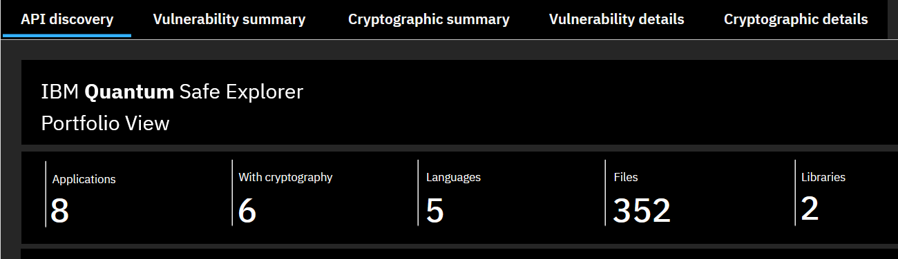
API discovery
The API discovery tab displays the inventory from all the languages scanned during the API Discovery scan. Specifically, it’s based on the data loaded into the database via the flatinput folder.
The Summary of Crypto findings table at the top provides a high-level summary of the total number of applications scanned and loaded, number with crypto, total number of languages, number of files scanned, and number of crypto libraries used.
The Scan history graph provides a monthly view of the total number of applications scanned and loaded each month that are with and without crypto.
The Application / Cryptography pie chart provides a view of the total number of applications scanned and loaded with crypto.
The Applications detailed crypto findings table gives a view of each application with details such as crypto libraries used, total number of files, total crypto functions, and the total number of cryptographic artifacts in each application. Right-click and filter each application in the table to view the detailed information of the file name and the crypto functions in them.
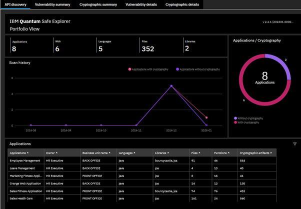
Vulnerability summary
The Vulnerability summary tab displays a summary of the cryptographic vulnerabilities in the IBM Quantum Safe Explorer results that were previously loaded into the PostgreSQL database. Click the Vulnerability summary tab to return to this page at any time.
The Vulnerability summary page comprises three sections:
- Severity
- Classification
- Language
Each section consists of a chart and a table. These are interactive. Click any part of a chart or table to choose what will be displayed on all three charts.
The Severity section categorizes the vulnerabilities into three severity levels. These are listed in the Vulnerability score column of the table. From least severe to most, the vulnerability scores are Minor, Major, and Critical. The number of vulnerabilities of each type that were found are listed in a table and visualized in an accompanying donut chart.
The Classification section lists the specific vulnerabilities for each severity level, with the number of occurrences of each.
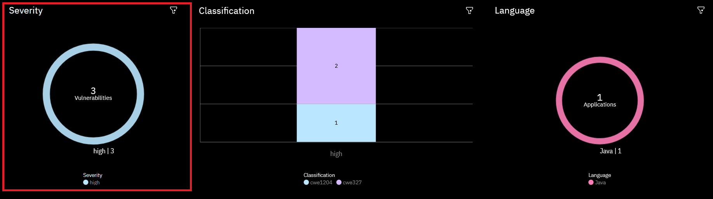
The Classification column of the table, and the corresponding bar chart, displays cwe<Weakness_ID>. The table includes a Debug message column, which provides a brief summary of the vulnerability. The weakness ID of a vulnerability can be looked up on the Common Weakness Enumeration website for further details.
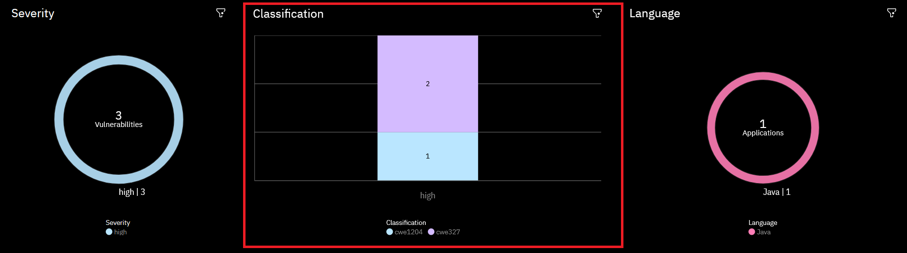
The Language section of the Vulnerability summary page shows the name of each application, grouped by programming language. The data are provided in a table and visualized in a donut chart.
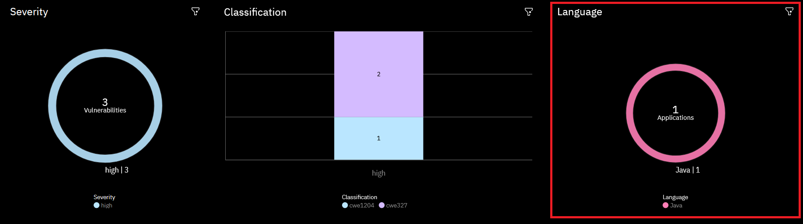
Use the Language and application section to filter the charts by programming language or application name.
Each of the three sections has a filter icon in its top right corner. Click this icon to edit the filters for that section.
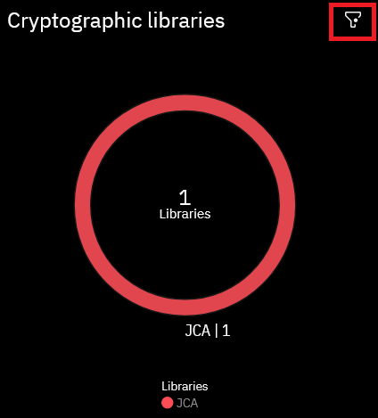
Cryptographic summary
Clicking the Cryptographic summary tab will display two sections: Variants and Cryptographic libraries. Each of these sections comprises a donut chart and a table. As with the Vulnerability summary page, the charts and tables on this page are interactive; clicking any part of these will apply a filter to all data shown on the page.
The Variants section breaks the results down into cryptographic algorithms. The donut chart shows how many instances of each algorithm were found, and the table shows the different key sizes found for each variant.
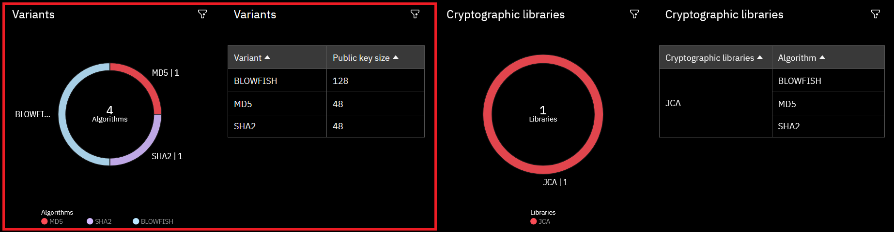
The Cryptographic libraries section contains a donut plot listing the cryptographic software libraries used, such as OpenSSL or JCA. The accompanying table lists the vulnerable algorithms found for each library.
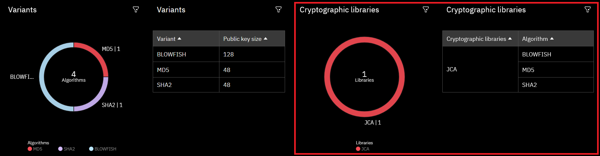
Vulnerability details
The Vulnerability details page displays a table with all the vulnerabilities found, grouped by vulnerability score.
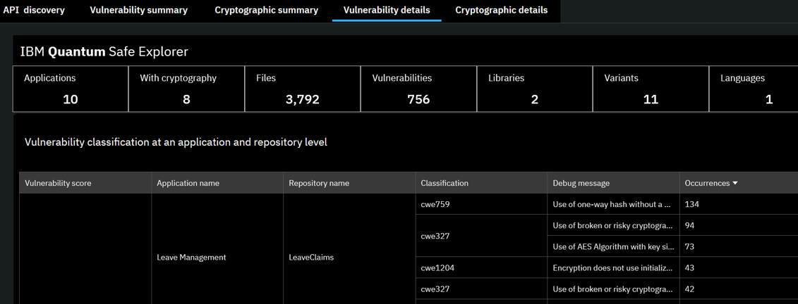
This table contains all the information from the table in the Classification section of the Vulnerability summary page, but also breaks the results down by the names of the application and the repository where the vulnerabilities were found.
Cryptographic details
The Cryptographic details page displays a table listing the cryptographic variants found, along with their public key sizes. These are the same data provided in the Variants table on the Cryptographic summary page but include additional details: the application and repository names. This is shown in the following screenshot, which displays cryptographic algorithm usage at an application and repository level.
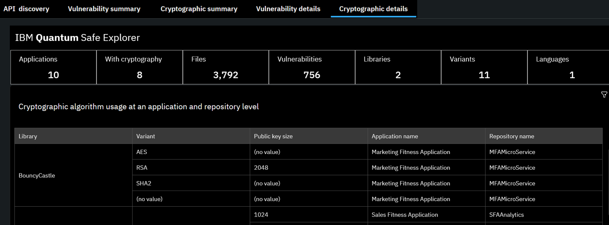
Direct updates to Portfolio View
See this section under the Github Integration page to integrate automatic dashboard updates into your pipeline.
Troubleshooting
postgresdbdump.sql syntax error
If you encounter a syntax error when running the postgresdbdump.sql script, add a semicolon to lines 736 and 748 and re-run it. The corrected lines should look like this:
select * from scanhistory order by scanid, created_time asc;X11 connection rejected because of wrong authentication
If you see this error while trying to run either the Cognos installer or configuration, ensure that you have followed the proper steps to enable X11 forwarding, including:
XQE-DAT-0001 | The request was canceled by the user
If you see one or both of the following errors on the portfolio view dashboard:
XQE-DAT-0001 Data source adapter error: org.postgresql.util.PSQLException: ERROR: cross-database references are not implemented: "qsapm.qspm.findings" Position: 369
The request was canceled by the userEnsure, using SQL queries, that the database qsapm exists, that the schema qspm under it exists, and that qsapm.qspm.findings is populated.
Use the following SQL query to get a more detailed view of the ingested data once you confirm the above:
Reveal ingested data sql query
select_ingested_data.sql
WITH orgapplicationhierarchy AS (
SELECT
o.organizationid,
o.organizationname,
b.businessunitid,
b.businessunitname,
a.applicationid,
r.repositoryid,
r.repositoryname
FROM qspm.organizationdimension o
JOIN qspm.businessunitdimension b ON o.organizationid = b.organizationid
JOIN qspm.divisiondimension d ON b.businessunitid = d.businessunitid
JOIN qspm.applicationdimension a ON d.divisionid = a.divisionid
JOIN qspm.repositorydimension r ON a.applicationid = r.applicationid
),
latestscan AS (
SELECT
scanid,
applicationid,
repositoryid,
ROW_NUMBER() OVER (PARTITION BY applicationid, repositoryid ORDER BY scandatetimestamp DESC) AS rn
FROM qspm.findings
),
latestscan_filtered AS (
SELECT scanid, applicationid, repositoryid
FROM latestscan
WHERE rn = 1
),
vulnerabilities_details AS (
SELECT v.*
from qspm.vulnerabilities v
JOIN latestscan_filtered ls
ON v.scanid = ls.scanid
AND v.applicationid = ls.applicationid
AND v.repositoryid = ls.repositoryid
)
select
vd.scanid, vd.applicationid , vd.repositoryid ,vd.vulnerabilityscore, a.applicationname,r.repositoryname,vd.classification,vd.debugmessage
from
vulnerabilities_details vd
join qspm.applicationdimension a on a.applicationid = vd.applicationid
join qspm.repositorydimension r on vd.repositoryid = r.repositoryidInsufficient Storage
In the event you don’t have enough storage under /opt/, you can move this directory to an additional storage disk, if you have it available.
For example:
# Create new target directory
sudo mkdir -p /mnt/second/opt
# Copy existing /opt to the new location (if applicable)
sudo rsync -avx /opt/ /mnt/second/opt/
# Rename old /opt
sudo mv /opt /opt.old
# Create a new mount point:
sudo mkdir /opt
# Unmount disk from /mnt/second
sudo umount /mnt/second
# Mount to /opt for testing
mount /dev/vdc1 /opt
# Verify
df -h /opt
# Edit fstab:
vim /etc/fstab # Replace entry for /dev/vd1 with: "/dev/vdc1 /opt ext4 defaults 0 0", save and exit
# Reload systemd
systemctl daemon-reload
# Mount it
sudo mount -a
# Verify
df -h /opt